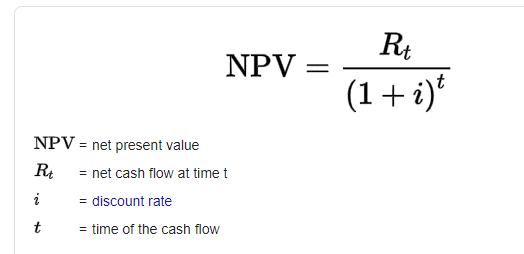
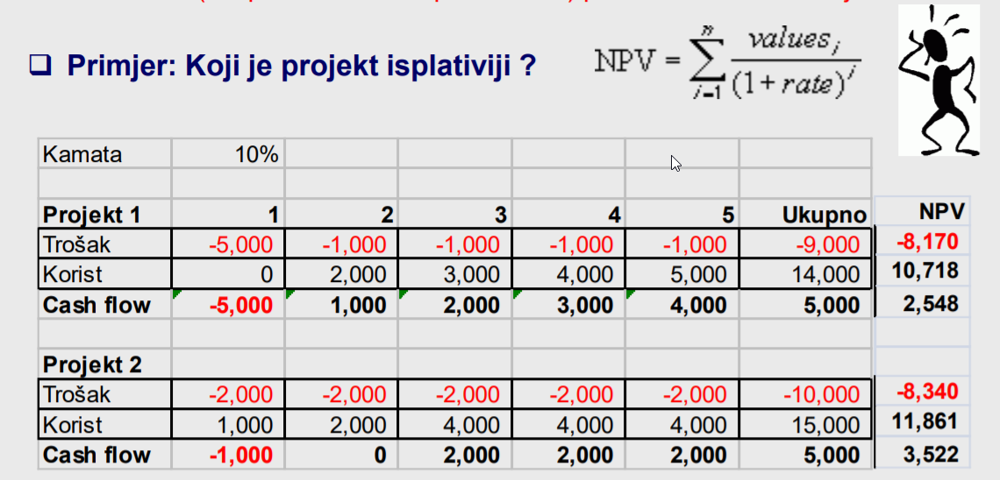

Firecracker Kako izračunati to?
GINA ja sam nacrtala graf aktivnosti prema tablici. tražila sve putove i našla najduži
Firecracker Jel su po defaultu sve aktivnosti u jednoj fazi povezane? U smislu 2. i 3. su povezani, 5. i 6., 6. i 7.? Ili samo ovako gdje piše prethodnici?
Firecracker Možeš slikat graf aktivnosti?
johndoe Gdje piše prethodnici
johndoe ja sam po tim prethodnicima crtala
toto6 U trećem stupcu na onoj slici
Jim  Rt je suma troškova te godine (u našem primjeru za inicijalni trošak je trošak edukacije i sklopovlja, za iduće godine plaće) i dijeli se sa (1+ 0.09) na t, gdje je t=0 za inicijalni trošak, 1 za prvu godinu itd
[EDIT] nisam 100% jer nigdje nemamo tu formulu eksplicitno al po rješenjima s gita bi tako trebalo biti
Zna li netko navesti primjer dobre i loše kontrolne točke?
Volio bih da me na svakom ispitu pitaju što sam naučio iz kolegija. Ne zbog džabe bodova, nego da verificiram svoje znanje i vidim jel stvarno nešto iz kolegija mogu primjenit na real life.
Je li netko dobio ista rješenja za 1. zad MI 20/21?
Klokan zar ne bi u drugom dijelu kad se računa ušteda za prvi iznos trebalo uzeti kamatu od 9 posto? Jer ovih 15 posto bi se trebalo odnositi samo na drugi slučaj
Klokan Kako si za prvu godinu u a) dijelu dobio/la 79358?
Tko je odgovoran za sprječavanje klizanja dosega? Projektni tim? Mislim kako to argumentirat?
member Mislim da je to projektni menadžer jer je on taj koji je zadužen za definiranje očekivanja tijekom projekta i koji može reći ne klijentu za neki novi zahtjev
bestik dobro pitanje, al mislim da se uzima 15% za jedno i drugo (vjerujem da bi inače naglasili suprotno). najbolje asistenta pitat za to
member (36000+38500+12000)/(1+0.09)
Kako se dobiju ovi NPV sa strane? (prezentacija pokretanje projekta 35. slajd)

Kad radim po formuli sa slajda, ne dobijem dobre rezultate
Cvija Okej, da bi se dobili brojevi sa strane, ovi brojevi kod Projekt 1 idu 0, 1, 2, 3, 4, Ukupno -> ne 1, 2, 3, 4, 5, Ukupno